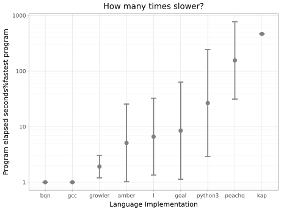

Fastest
contributed programs, grouped by programming language implementation
shamelessly borrowed from The Computer Language Benchmarks Game

| × | source | secs | mem | gz | cpu secs |
|---|---|---|---|---|---|
| 1.00 | collatz.c | 0.0104 | 2,413 | 819 | 0.00916 |
| 16.8 | collatz.amber.k | 0.174 | 24,949 | 574 | 0.172 |
| 25.0 | collatz.growler.k | 0.26 | 3,461 | 576 | 0.257 |
| 28.7 | collatz.l.q | 0.298 | 12,603 | 652 | 0.3 |
| 36.1 | collatz.goal | 0.375 | 35,918 | 576 | 0.506 |
| 60.5 | collatz.py | 0.629 | 15,081 | 238 | 0.602 |
| 366. | collatz.kap | 3.81 | 232,108 | 174 | 4.84 |
| 497. | collatz.peach.q | 5.17 | 19,427 | 656 | 5.12 |
| 1.00 | spectralnorm.amber.k | 0.0126 | 27,046 | 256 | 0.0105 |
| 1.23 | spectralnorm.goal | 0.0155 | 14,127 | 259 | 0.0147 |
| 1.30 | spectralnorm.growler.k | 0.0163 | 7,873 | 258 | 0.0141 |
| 124. | spectralnorm.py | 1.57 | 15,225 | 474 | 1.54 |
This is the current round of the benchmarks game. See Round 1 for the last round performance. It's never too late to add your language to this round or previous rounds or to improve any program from any round.
See description of spectralnorm. collatz requires the length of the collatz sequence starting at 1+2^x
Please contribute more programs for your favourite array language. Note there is only one rule: don't use libraries other than the c/c++ standard libraries or python's sys, multiprocessing and math. There is no restriction on algorithms, unlike the CLBG.
Please propose interesting new benchmarks
The benchmark is run on an i5-1135g7 (tiger lake, some avx512) and each process is limited to 2GB of memory